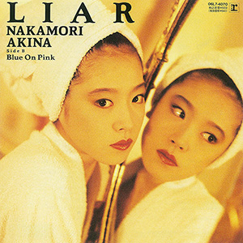

单曲：第23张
发行年份：1989年
发行日期：4月25日
| 歌名 | 作词 | 作曲 | 编曲 |
|---|---|---|---|
| LIAR | 白峰美津子 | 和泉一弥 | 西平彰 |
| Blue On Pink | 三浦徳子 | 国安わたる | 若草恵 |
首发规格：黑胶 EP: 06L7-4070，卡带 CT: 09L5-4070，8cmCD: 09L3-4070
唱片公司：Reprise Records，Warner Pioneer
排行榜：
Oricon公信榜单曲周榜第1位，1989年度榜第28位
TBS The Best Ten音乐节目第2位，1988年上半期第19位
日本电视台十佳歌曲音乐节目第2位
获奖：第8回大都市歌謡祭 流行音乐入賞
专辑首入：CRUISE
再发行：
1998年11月26日 - 12cmCD: WPC6-8680
2008年11月12日 - 数码下载
2014年6月18日 - 收入1982-1991单曲合集CD套装
2021年6月9日 - 收入1982-1991单曲合集黑胶套装